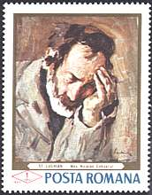
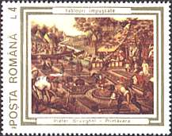

TABLOURI IMPUSCATE
Poporul rom‚n, satul si obosit de un regim dintre cele mai opresive, de
dictatura unui partid unic si de persoana care l-a reprezentat timp de 25 de ani,
Nicolae Ceausescu, s- a revoltat si a lichidat regimul comunist in decembrie
1989. In timpul revoltei forte misterioase, neidentificate nici pana astazi, au
tras in cetateni neinarmati care manifestau pentru libertate pe strazile
Bucurestiului. Armata, care s-a alaturat rapid manifestantilor, a raspuns la
atacurile criminalilor invizibili cu arme si uneori cu focuri de artilerie.
In timpul acestor adevarate batalii de strada multe
obiecte au fost avariate, urme de gloante si de incendii fiind vizibile timp de
multi ani pe cladirile din centrul ale capitalei. Din pacate si numeroase
obiecte valoroase, pastrate la Muzeul de Arta, au avut de suferit de pe urma
luptelor de atunci.
Aceste pagube au impresionat profund atat pe amatorii de arta,
cat si opinia publica si pentru acest motiv la numai 10 luni dupa desfasurarea
evenimentelor, mai precis pe data de 25 octombrie 1990, administratia postala
rom‚na a emis o serie destul de neobisnuita, formata din sase marci, care arata
capodopere ale Muzeului de a Arta atinse de gloante. Toate marcile din serie
sunt intitulate Tablouri Ómpuscate.
 |
Pe picturile aratate in dreapta si jos se pot distinge cu usurinta urmele gloantelor. Marcile au fost probabil realizate si emise in graba, ceea ce ar putea explica o calitate sensibil inferioara in comparatie cu ceea ce a fost emis cu ani in urma. De exemplu marca din dreapta, care reproduce aceeasi opera de arta cu cea din stanga, este departe de calitatea ei, chiar daca cea din stanga a fost emisa cu 22 de ani inainte, in 1968. Aceasa vestita capodopera a pictorului Stefan Luchian il reprezinta pe Mos Nicolae Cobzarul, numerele de catalog Scott fiind 2000 si 3620. Intre timp acest tablou a fost reconditionat si poate fi admirat la Muzeul National de Arta. |
 |
In
dreapta si mai jos sunt aratate celelalte timbre ale seriei, dupa cum
urmeaza:
|
|
|
 |

O serie impresionanta, carea reda o frantura semnificativa din istoria recenta care a cutremurat inca una dintre tarile balcanice, atat de incercate la sfarsitul secolului 20.
|
|
|
|


Nota. Nu a fost pentru prima data c‚nd picturile rom‚nesti si detinatorii lor legali au avut de suferit. Urmeaza un scurt exemplu. In anul 1956, dupa 39 de ani, guvernul fostei Uniuni Sovietice a returnat Rom‚niei unele opere de arta care au apartinut inainte de primul razboi mondial unor muzee din Rom‚nia, si care au fost evacuate Ón 1917 catre Rusia de catre guvernul rom‚n. Intre acestea se aflau si opere ale pictorului Ion Andreescu. Numare a fost surprinderea expertilor rom‚ni c‚nd acestia au constatat ca o buna perte dintre oprerele restituite a fost Ónlocuita cu falsuri. Desigur nimic nu se putea face Ón acea perioada Ómpotriva marelui prieten si eliberator din Est. Soursa: "Ioan Andreescu, p.9. ALCOR EDIMPEX, iunie 1997, ISBN 973-97901-4-3". Aceasta nu a Ómpiedecat, ba poate chiar a Óncurajat guvernul rom‚n al epocii sa spolieze la randul lui, prin nationalizari si vanzari fortate catre stat, numerosi proprietari privati ai unor opere de arta valoroase.
IMPUSCATE - APOI SUPRATIPARITE!
Dupa circa 10 ani de la emitere, primele cinci valori ale seriei au fost supratiparite cu o noua valoare nominala de 1700 lei care corespunde taxei pentru o scrisoare simpla trimisa in interiorul tarii.

Vechea valoare faciala a fost acoperita de imaginea neagra a unui sevalet, in "traditia" recentelor supratipariri ale Postei Romane. Pentru a "inveseli" lucrurile, mi-am permis sa stampilez seria pe data de 19 septembrie 2000, ziua mea de nastere. Stampilarea a fost facuta de o foarte amabila functionara de la Oficiul Postal 45, de pe str. Brezoianu din Bucuresti. Va rog sa notati ca valoare de 5 Lei nu a fost supratiparita, probabila deoarece nu mai exista in stoc. Ea a fost tiparita doar in 250,000 de exemplare, ceea ce este putin daca se compara cu tirajul de 800,000 la 3,000,000 pentru celelalte valori ale seriei. Imaginea de mai sus arata doar partea de sus a plicului, jos aflandu-se alte doua marci, pentru a se atinge valoare de 12'300 lei, taxa pentru o scrisoare trimisa cu avionul din Romania in Elvetia.